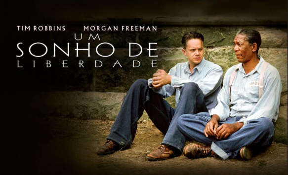
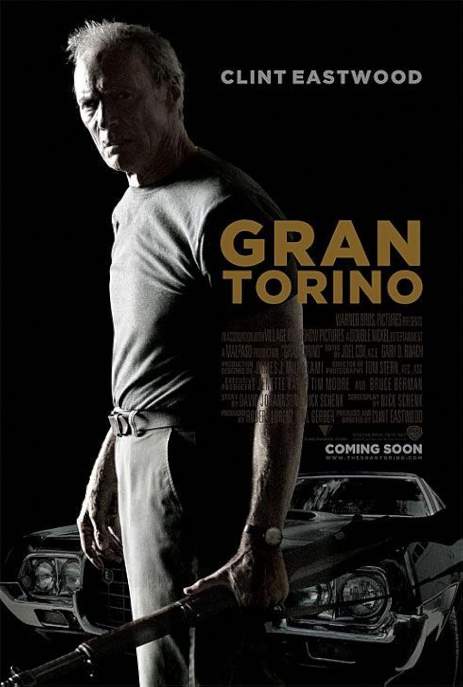
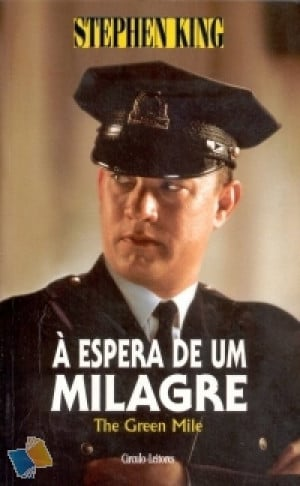

Assista ao trailerUm Sonho de Liberdade (1994): Andy Dufresne, um banqueiro injustamente condenado pelo assassinato da esposa e do amante dela, é enviado à severa prisão de Shawshank. Ao longo de décadas, ele enfrenta a violência do local, constrói uma amizade profunda com o prisioneiro Red e usa sua inteligência para manter a esperança viva e planejar sua liberdade.

Assista ao trailerGran Torino (2008): Walt Kowalski, um veterano da Guerra da Coreia rabugento e preconceituoso, vive isolado em seu bairro. Tudo muda quando ele impede seu jovem vizinho Hmong de roubar seu valioso carro Gran Torino 1972, criando um laço inesperado com a família do jovem e passando a protegê-los de gangues locais.

Assista ao trailerA Espera de um Milagre (1999): Nos anos 1930, Paul Edgecomb é o chefe dos guardas do corredor da morte de uma prisão. Sua vida muda com a chegada de John Coffey, um gigante acusado de matar duas crianças, mas que revela ter uma índole gentil e o dom de realizar milagres de cura inacreditáveis.
Mulher-Gato (2004): Patience Philips é uma designer tímida que descobre um segredo sombrio sobre o creme cosmético da empresa onde trabalha. Ao ser morta para conter a conspiração, ela é ressuscitada por gatos místicos, ganhando agilidade e sentidos felinos, e assume a identidade de Mulher-Gato para se vingar e expor os criminosos.
Barbie (2023): Barbie vive no mundo perfeito da "Barbieland", mas começa a enfrentar crises existenciais e imperfeições físicas. Para descobrir o que está acontecendo, ela precisa ir ao mundo real acompanhada de Ken, desencadeando transformações no modo como ambos enxergam a si mesmos e a sociedade.